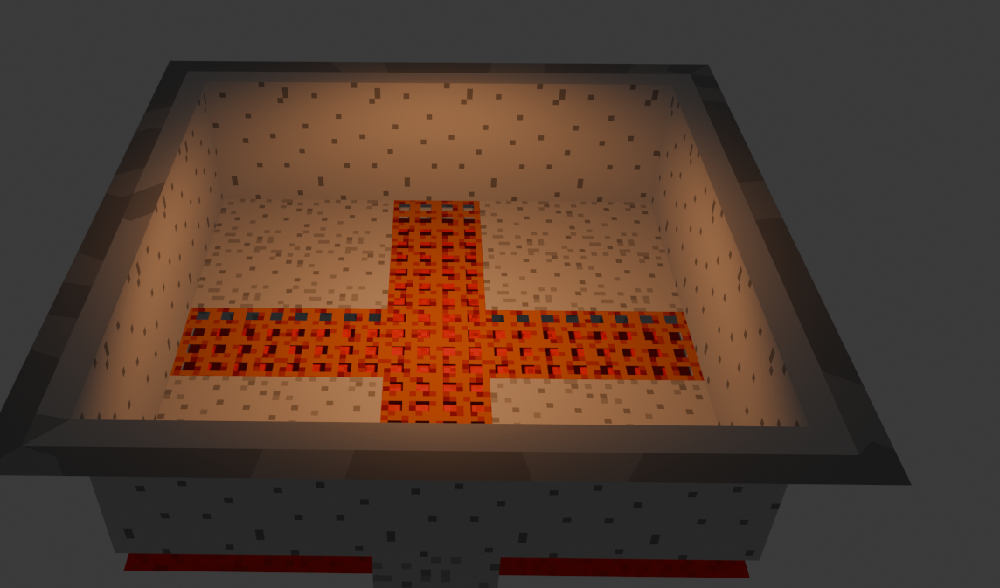
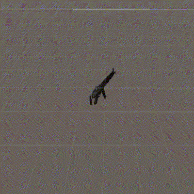
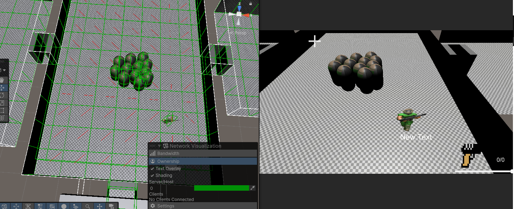
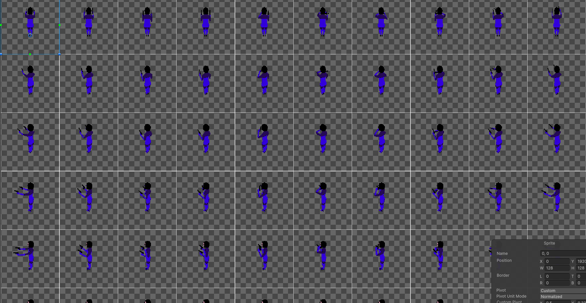
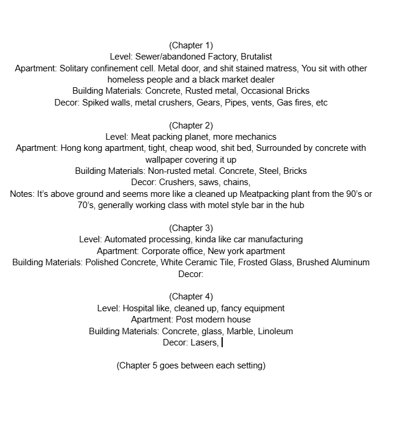

Progress

My burns taught me alot and I was able to make good use of them. Reading the document sped everything up and I would've likely gotten a massive headstart if I did that in the first place. Anyway I fixed many issues with Collision layers, with this I was able to have working Doors, Enemies taking damage, and the spawning of enemies. I started the goal of having a working weapon system with switching, reloading, clips, etc. It was at this moment I realized how complicated I made the combat. Aside from melee and guns, there are shotguns, akimbo guns, all kind of variables for shooting. I sorta realized that I might not add everything so I change my plans from a conversion to a slow addition of features, only add what's nessacary. That means I need a bare bones game. After I got the UI to work with weapon switching and reloads, I worked on weapon drops

Mainly I needed this so Money can even work, you can drop money and earn it. This is the start of the loop, earn money from killing, spend money on guns and ammo, continue. Took a bit of effort to get the physics to work but it eventually did.

With the killing of enemies i'd thought to work to convert the old Pathfinding code from the original project, which I was able to do quite successfully. I was luckily smart enough to impledment from basic debugging that made refactoring doable. This made me overconfident and thought I could convert all the old AI behavior tree code and it made me realize just how difficult it is to have ECS work with anything hierarchical or involves children, trying different solutions didn't help
To take a break from this kinda mindfuck, I decided to work mostly on graphics theses past few weeks. Getting the tools working for converting 3D models into sprites, I also cleaned it up a bit. Back then there was multiple images for each angle. Now it's just 2 textures, Diffuse and Normal Maps. It records the animation, applies it horizontally before going down by one row

I also begin the slow process of adding back the animatior, it turns out the SpriteRenderer double rendering on the server and client was a issue on my part because I didn't fully read the forums. It now works and I was able to get it to change sprites and have a working Doomguy looking at the mouse, through playing animations come later
I wanted to save the Animator specifically because I remember programming the prototype there was tons of issues getting it to sync up with the AI code, so I gave the AI a go again and it once again turned into a failure. To break from it I decided to work on a small detail I knew I needed, levels having multiple textures. Luckily I knew about submeshes so this was decently easy, except the transparent materials rendering on top of everything else. I dunno why that's happening. Anyway that made me realize another problem, I don't have a straight forward idea to how to texture the enviroment and how it should look. It sent me a bit on a fun research weekend finding references to housing, decor, materials, etc. This research phase was actually helped alot by AI

Eventually at the last minute, today in fact. I had a idea for the AI. have the actual trees be normal C# classes with inheritances and have the Evaulate function run ECS code. The BehaviorTree component simply as a Index to the tree. And the System just evaluate that entity and the Index. There might be issues but one problem at a time. For now my main goal is to have a complete game loop, the spawning can be randomized, but it needs to have weapon buying, money and ammo, with more then one enemy. Slowly add to that and fix bugs
Note to self, buy more crunchy chicken food at Taco bell